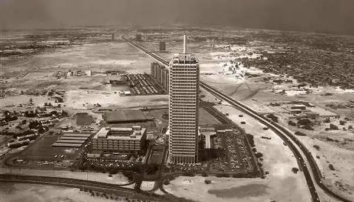
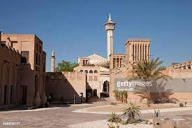

Here are some interesting facts and more information about Dubai's history:
-
Ancient Origins: While Dubai's history dates back centuries, archaeological evidence suggests human settlement in the region as early as 3,000 BCE. The area served as a trading hub for pearl diving, fishing, and caravan routes.
.jpg)
- Early Development: In the 18th century, Dubai began to flourish as a fishing and trading village due to its strategic location along the Dubai Creek, which allowed it to become a prominent port for maritime trade.
- The Bani Yas Tribe: The Bani Yas tribe, led by the Maktoum family, played a crucial role in the development of Dubai. In 1833, the Maktoum family established Dubai as a sheikhdom and continued to govern the emirate to this day.
- Pearl Diving Industry: From the late 19th to the early 20th century, Dubai's economy thrived on the pearl diving industry. Dubai was a major center for pearl trading, attracting merchants from around the world.
- Trucial States: In the early 19th century, Dubai, along with other neighboring emirates, formed a loose confederation known as the Trucial States, under the protection of the British Empire. This arrangement lasted until the formation of the United Arab Emirates in 1971.
- Oil Discovery: In 1966, oil was discovered in Dubai, transforming the economy and catapulting the emirate into rapid development. However, Dubai's leadership recognized the finite nature of oil reserves and embarked on diversifying the economy to other sectors.
- Economic Transformation: Starting in the 1980s, Dubai shifted its focus to trade, finance, and tourism, envisioning a modern and cosmopolitan city. This vision led to the development of ambitious infrastructure projects, such as Jebel Ali Port and the establishment of free trade zones.
- Dubai's Economic Free Zones: Dubai pioneered the concept of economic free zones in the Middle East, creating areas like Jebel Ali Free Zone and Dubai International Financial Centre (DIFC) that offered attractive incentives for businesses, leading to increased foreign investment.
- Burj Al Arab and Burj Khalifa: Dubai gained global recognition for its architectural marvels. The iconic Burj Al Arab, completed in 1999, became a symbol of luxury and opulence, while the Burj Khalifa, completed in 2010, holds the title of the world's tallest building.
- Global City and Tourism Hub: Today, Dubai is known as a global city and a premier tourism destination. Its impressive skyline, world-class hotels, shopping malls, entertainment venues, and cultural attractions draw millions of visitors each year.
.jpg)

.jpg)

.jpg)
.jpg)
.jpg)
.jpg)
.jpg)
These historical facts highlight the transformation of Dubai from a small fishing village to a dynamic global city with a rich and diverse cultural heritage.